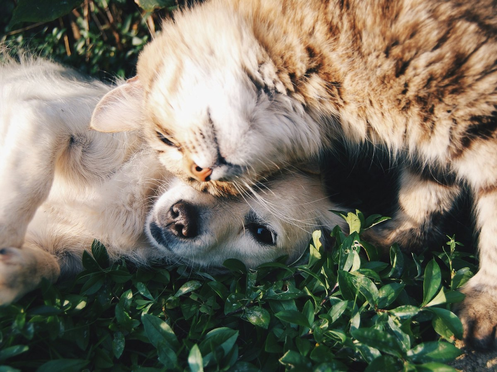

Dedicação
Cada atendimento é único. Sem pressa, com olhar atento ao comportamento do pet.
Nossa história
O Sato Petshop nasceu em 2024, em Presidente Prudente, para oferecer um espaço em que banho, saúde e carinho caminham juntos.

Cuidar de cada pet como se fosse da família: com técnica, paciência e respeito. Queremos que o tutor saia tranquilo e o animal, bem tratado.
Espaço amplo e climatizado na Vila Boa Vista, pensado para o conforto durante o banho, a tosa e as consultas. Também contamos com opções de vacina, medicamentos e o serviço de leva e traz.
Cada atendimento é único. Sem pressa, com olhar atento ao comportamento do pet.
Profissionais habilitados e conversa clara com o tutor sobre o que o animal precisa.
Somos o petshop da vizinhança: fácil de chegar, fácil de chamar no WhatsApp.